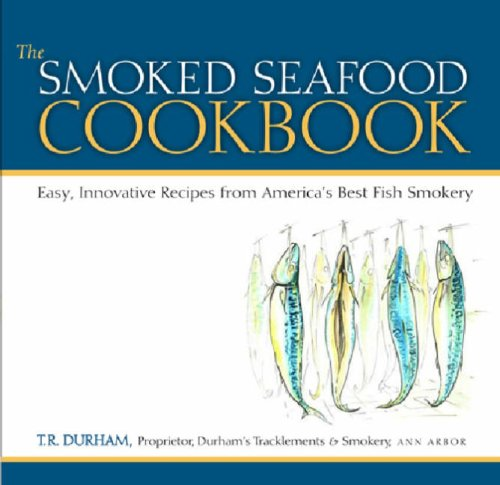

The Smoked Seafood Cookbook
How do you cook with smoked seafood? And can it work "outside the bagel"? Those are two questions that hundreds of customers asked over the years when they stopped by T.R. Durham's shop, Durham's Tracklements & Smokery in Ann Arbor, Michigan, to buy his famous smoked seafood. Inspired, Durham eventually collected enough recipes not only to fill a book but to answer those questions in imaginative and delicious ways.
The Smoked Seafood Cookbook uniquely addresses a neglected spot on the culinary bookshelf. With everything from smoked salmon to mackerel to finnan haddie and smoked scallops, Durham's recipes offer ideas for exciting salads; pasta, potato, and other starch dishes paired with smoked seafood; soups from every corner of the globe; easy-to-prepare appetizers; even smoked-seafood variations on the classic dish brandade.
The Smoked Seafood Cookbook is also designed to take advantage of the near-universal availability of smoked seafood online, via mail-order, in specialty shops, and in almost every supermarket in America. It offers information on the kinds of smoked seafood available, their particular flavors and textures, and what cooking applications best suit each variety. Durham provides chapters on do-it-yourself techniques for home smoking, an illustrated chapter on slicing and serving your own smoked fish, and a listing of sources for smoked seafood. Additionally, the book is beautifully illustrated throughout with color and black-and-white drawings by local artist Noel Bielaczyc.
As a way to raise further the profile of smoked seafood's role in cooking---and to provide the culinary industry's endorsement of that idea---the book is sprinkled throughout with recipes from professional chefs across the country. Among the contributors are Mario Batali, chef-owner of many restaurants and author of several cookbooks; Sara Moulton, cookbook author and executive chef of Gourmet magazine; Pete Peterson, chef-owner of Tapawingo in Ellsworth, Michigan; Darra Goldstein, cookbook author and editor of Gastronomica: The Journal of Food and Culture; and others.
If you love smoked seafood, or if you've ever wondered what to do with it besides serve it for brunch or put it on a bagel, The Smoked Seafood Cookbook deserves a place in your kitchen.